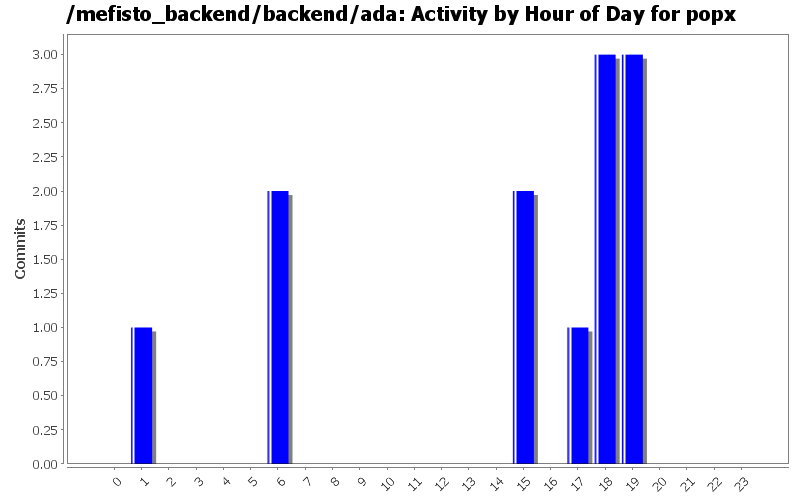
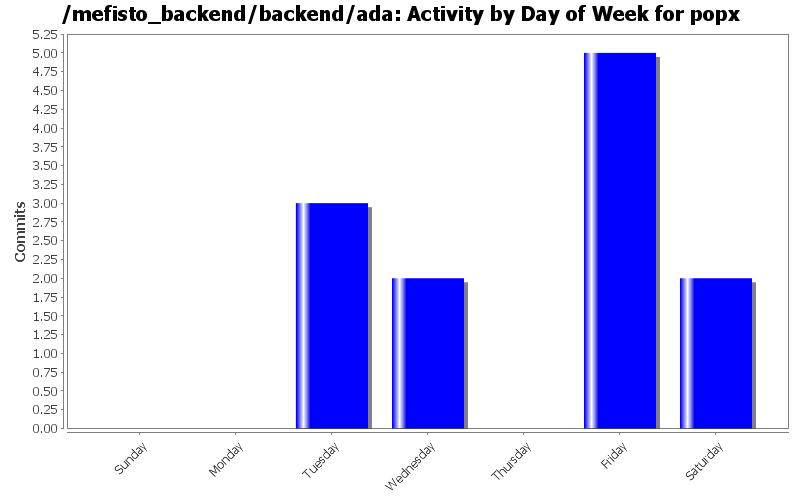

| Directory | Changes | Lines of Code | Lines per Change |
|---|---|---|---|
| Totals | 12 (100.0%) | 1566 (100.0%) | 130.5 |
| etc/ | 8 (66.7%) | 1440 (92.0%) | 180.0 |
| / | 4 (33.3%) | 126 (8.0%) | 31.5 |

Script to delete old files
49 lines of code changed in 2 files:
port to 84
1 lines of code changed in 1 file:
1 lines of code changed in 1 file:
Updated by JNIP
2 lines of code changed in 2 files:
Saving Jocelyn's changes
1412 lines of code changed in 3 files:
JNIP
101 lines of code changed in 3 files: